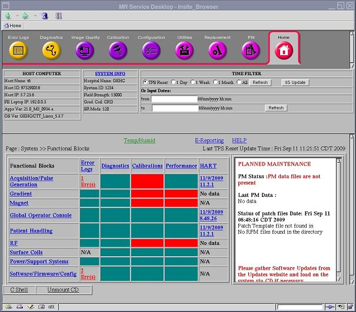

Illustration 1: FE Cockpit Home Page (example)

| NOTE: | The FE Cockpit Home page contains a link to the E-Reporting Tool. To find out how to view this tool, see E-Reporting Page. For more information about E-Reporting functions, see E-Reporting Tool. |